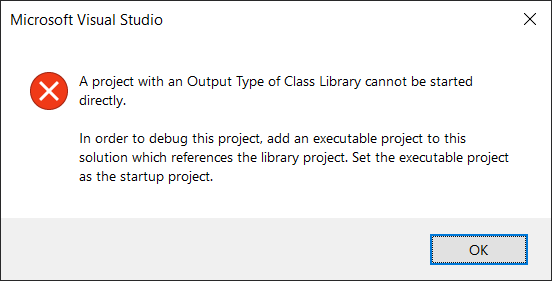

Lead with an Executable Project
The first project in the solution file should be an executable project since Visual Studio chooses this project as its default startup project.
Each time a project is added to a solution through Visual Studio, a reference to that project is added to the sln file. Visual Studio adds each new reference to the end of the list of existing references. The first project reference in this list is slightly special. If no project has been explicitly selected as the startup project, then Visual Studio selects the first project referenced in the sln to be the startup project.
The main reason for a codebase to contain an executable project is because the codebase contains application code, which means the primary artifact is an executable. In contrast, the primary artifact of library code is a package that is added as a dependency in other programming projects. For .NET code, these packages are called NuGet packages.
Even so, I often find executable projects in a repository that mostly contain library code. One example is a project that executes benchmarking tests. Another example is a project that demonstrates how the library code should be used.
I have seen automated test projects that are executable. Here is one example. However, such projects are not intended to be executed by setting them as the startup project and then starting them through Visual Studio via the start button. For this post, I am ignoring these types of projects. There is no use in making them the startup project.
Why would there be no record of an explicit selection for the startup project? I know of three reasons.
For a sln file named SolutionName.sln, Visual Studio (version 16.6.2) persists a reference to the startup project in the binary file .vs\SolutionName\v16\.suo. This .vs directory is created in the same directory as the sln file. Most gitignore files include an entry to ignore the .vs directory.
Having no project explicitly selected as the startup project is typically equivalent to the .vs directory not existing. Now let's get to those three reasons.
There is no reason to explicitly select a startup project if a solution doesn't contain an executable project. For this post, I am also ignoring such solutions. For them, the order of the projects in the sln file doesn't matter.
git cloneThe .vs directory won't exist after a repository is cloned. This is my experience every time I clone the repository of a new open-source project. In rare cases, I also experience this after my .git directory becomes corrupted and I reclone to fix the problem.
git cleanThe .vs directory won't exist after executing git clean -fdx, which deletes all untracked files. I often execute this command in order to increase the precision of my changes when modifying how a solution is built.
I consider it a small mistake whenever I try to start a project that cannot be started. Visual Studio informs me of my mistake with this error message.
Microsoft Visual Studio
A project with an Output Type of Class Library cannot be started directly.
In order to debug this project, add an executable project to this solution which references the library project. Set the executable project as the startup project.

I never want to see this error message.
When I learned about this behavior of Visual Studio, I moved the primary executable project in my application at work to the beginning of the list of projects in the sln file. I am a co-maintainer of the open-source project Elmish.WPF. We have many samples, and I made our simplest sample the default startup project in this commit.
Then as writing this post, I wanted to make sure I was practicing what I preached. I found two sln files in other open-source projects that could benefit from this change. Pull requests for SkiaSharp and F# Hedgehog soon followed.
The development experience is improved by having the list of projects begin with an executable project. It is a simple and quick change to make if it is not already that way. I encourage everyone to go find a sln file that doesn't list an executable project first and then make it so. In a technical sense, the world will be a better (more efficient) place.
The tags feature of Coding Blog Plugin is still being developed. Eventually the tags will link somewhere.
#Recommendation #DevOps #Visual_Studio